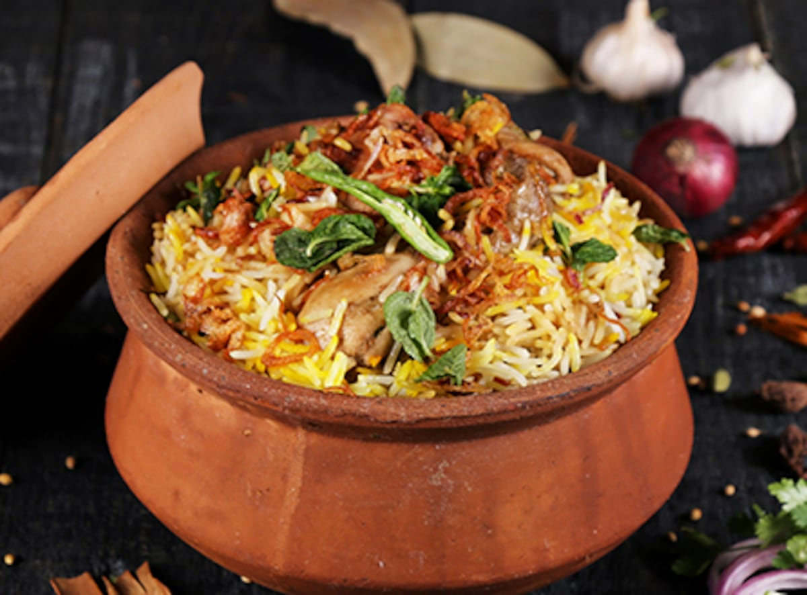

Biryani

Description
An all-time favourite - one can never say no to a plate full of aromatic biryani.
It is usually made with some type of meat or in some cases without meat
Ingredients
- Chicken
- Yogurt
- Fried Onions
- Tomato Puree
- Ginger garlic paste
- Whole Spices: Bay leaf, Cloves, Green Cardamom, Saffron
- Ground Spices: Red chilli powder, turmeric powder, garam masala powder
- Herbs: Fresh mint and coriander leaves
- Ghee
- Basmati Rice
Steps
- Fried onions are a key ingredient here, and it's important to get this right.
Onions are cut into slices and then browned on medium flame in ghee.
They don't need to be extra crispy, but onions should be a deep golden brown without getting burnt.
You can also use store bought fried onions which are easily available in supermarkets these days.
- This Hyderabadi Chicken Biryani gets a lot of its flavor from the marinade.
We are using yogurt as a tenderiser, fried onions (birista), tomato puree, red chili powder, turmeric powder, coriander powder, garam masala and salt to flavor the chicken.
It's important to marinate the chicken in a large bowl for at least two hours or overnight for the maximum flavor.
- Once you have your chicken marinated, rice and fried onions ready, start by cooking the marinated chicken.
To cook the chicken, place it in the dutch oven or a large pot that you plan to use for cooking the biryani, and cook them for 7 minutes.
There is no need to stir the chicken, only flip it once around the 4 minute mark.
- Once the chicken is partially cooked, the next step is to layer it with the fried onions, mint and coriander.
The onions add sweetness and richness while the herbs add a ton of flavor and freshness.
- The final step is layering with 70% cooked basmati rice.
Sprinkle saffron milk and ghee on top and cover tightly with a lid.
Originally, the pot was sealed with dough to prevent steam from escaping, but a tight lid works just as well.
It's important to cook this on a low flame so that the heat distributes evenly and the bottom doesn't get burnt.